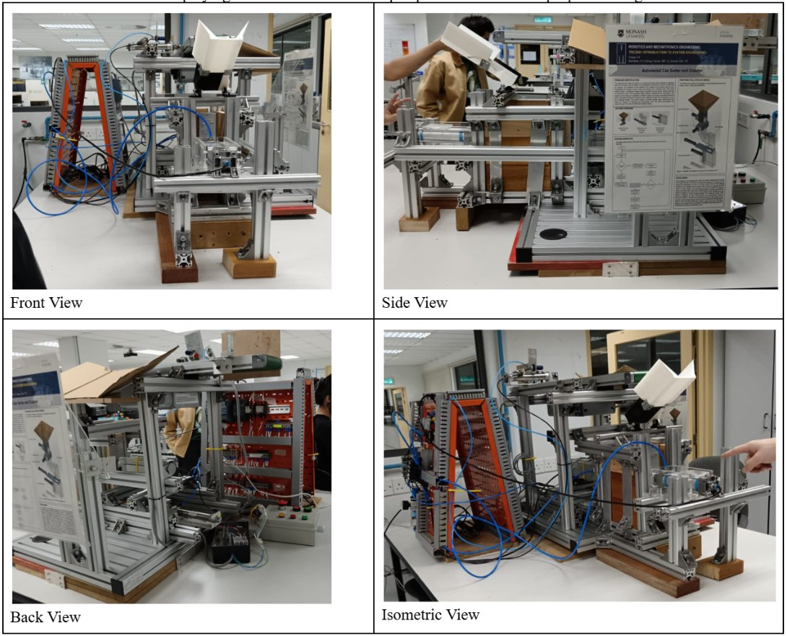
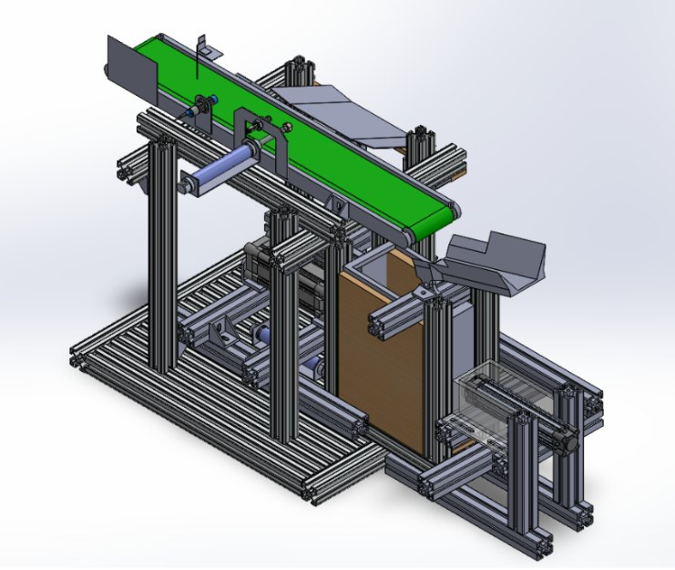
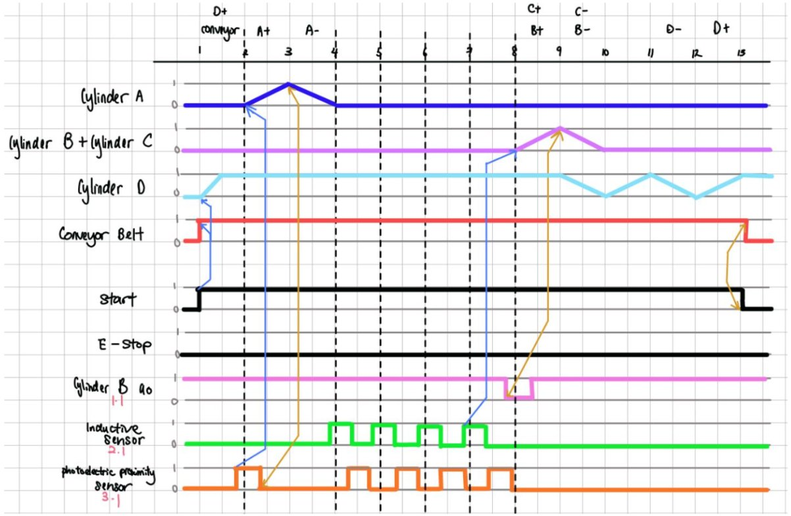
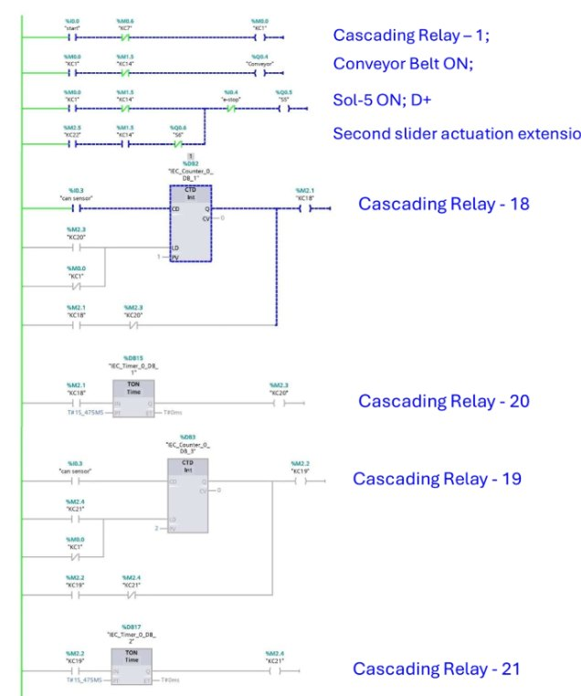
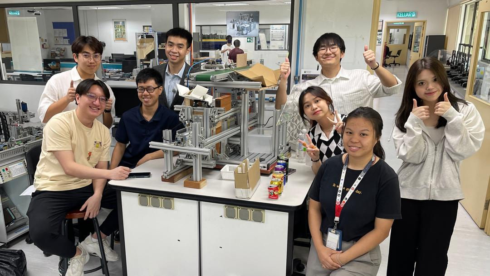

PLC-Controlled Can Sorting & Crushing Machine
A hands-on automation project combining PLC ladder logic, sequenced actuators, conveyor handling and physical machine testing, alongside practical pneumatic circuit simulation and assembly.

Project overview
This was a team of 8. We developed an automated can sorting and crushing mechanism with a conveyor, sensors, actuators and a programmed operation sequence. The physical machine was demonstrated in the laboratory and achieved approximately 70% volume reduction per crushing cycle.
My contribution
- I focused mainly on PLC ladder logic, timing design and the overall operation sequence.
- I developed the ladder logic for the conveyor, actuator timing and system control, including stop related logic.
- I prepared the timing and sequencing logic used to coordinate actuator operations.
- I also worked on design related tasks and testing during the physical build stage.
What the work demonstrates
- Connecting control logic with real mechanical motion.
- Understanding how sensors, relays, timers, actuators and sequencing work together.
- Working across CAD, PLC programming, simulation and physical equipment.
CAD, sequencing and PLC logic



Working demonstration
A video of the can-sorting and crushing mechanism in action, showing the physical system and operating sequence.
Additional practical work: pneumatic simulation and assembly
Alongside the can crusher project, I also practised building circuits both virtually and with real equipment. I assembled a training circuit independently by connecting the individual lines and components one by one. This is a separate demonstration of practical pneumatic skills rather than the internal circuit of the crusher itself.
Physical circuit setup
Hands-on pneumatic training rig and individual connection work.
Circuit simulation
Simulation of a two cylinder actuator sequence.
Team photo
